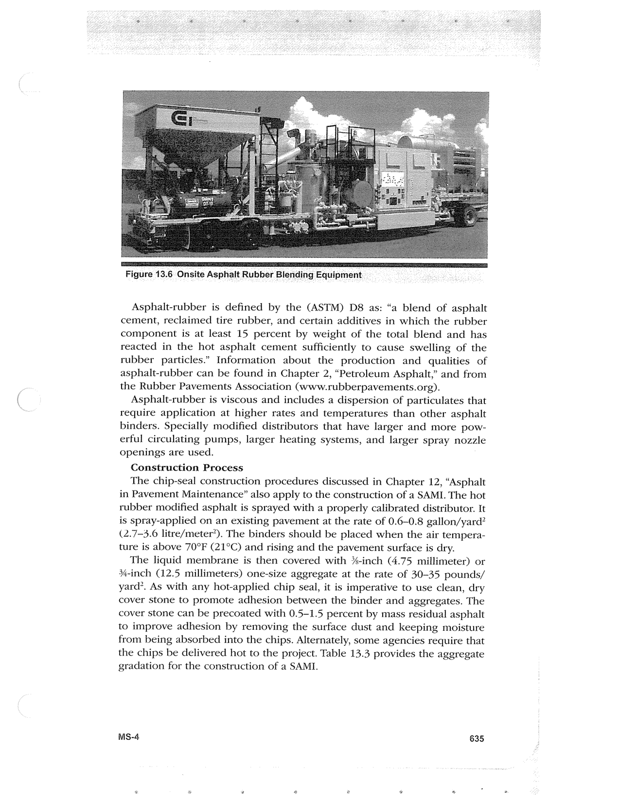

PDF page 669 · book page sequence 635


Searchable transcription
Unproofread OCR · 303 detected words; mean OCR confidence 93.86. Check technical values, symbols and table columns against the scan.
Figure 13.6 Onsite Asphalt Rubber Blending Equipment _ ie Se . :
Asphalt-rubber is defined by the (ASTM) D8 as: “a blend of asphalt cement, reclaimed tire rubber, and certain additives in which the rubber component is at least 15 percent by weight of the total blend and has reacted in the hot asphalt cement sufficiently to cause swelling of the rubber particles.” Information about the production and qualities of asphalt-rubber can be found in Chapter 2, “Petroleum Asphalt,” and from the Rubber Pavements Association (www.rubberpavements.org).
Asphalt-rubber is viscous and includes a dispersion of particulates that require application at higher rates and temperatures than other asphalt binders. Specially modified distributors that have larger and more pow- erful circulating pumps, larger heating systems, and larger spray nozzle openings are used.
Construction Process
The chip-seal construction procedures discussed in Chapter 12, “Asphalt in Pavement Maintenance” also apply to the construction of a SAMI. The hot rubber modified asphalt is sprayed with a properly calibrated distributor. It is spray-applied on an existing pavement at the rate of 0.6-0.8 gallon/yard? (2.7-3.6 litre/meter’). The binders should be placed when the air tempera- ture is above 70°F (21°C) and rising and the pavement surface is dry.
The liquid membrane is then covered with %-inch (4.75 millimeter) or %4-inch (12.5 millimeters) one-size aggregate at the rate of 30-35 pounds/ yard’. As with any hot-applied chip seal, it is imperative to use clean, dry cover stone to promote adhesion between the binder and aggregates. The cover stone can be precoated with 0.5-1.5 percent by mass residual asphalt to improve adhesion by removing the surface dust and keeping moisture from being absorbed into the chips. Alternately, some agencies require that the chips be delivered hot to the project. Table 13.3 provides the aggregate gradation for the construction of a SAMI.
Ms-4 635